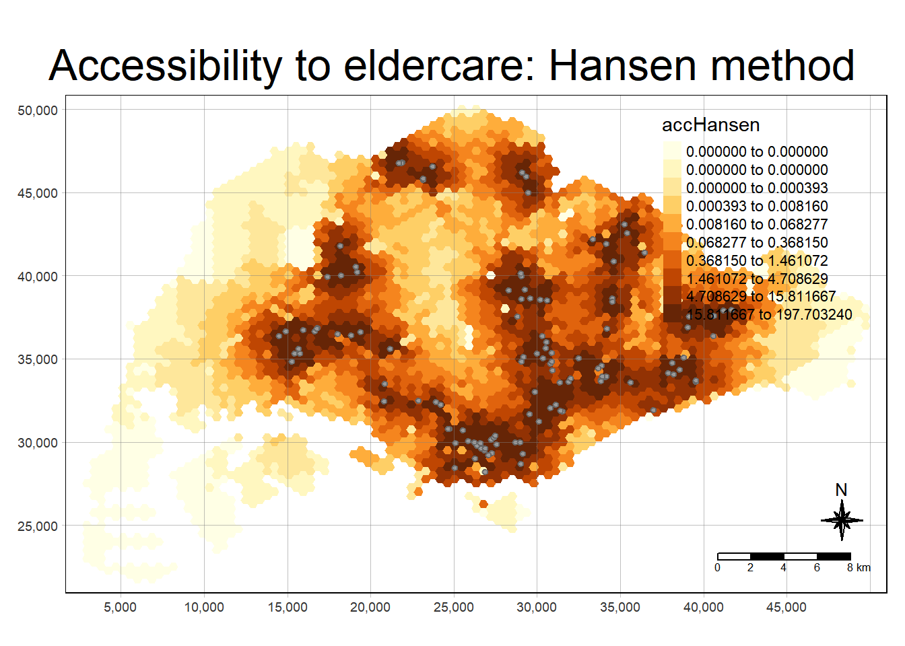

pacman::p_load(tmap, SpatialAcc, sf, ggstatsplot, reshape2, tidyverse, fca)1 Getting Started
1.1 Installing and Loading Packages
Pacman assists us by helping us load R packages that we require, sf, SpatialAcc, tidyverse, reshape2, ggstatplot and tmap.
1.2 Data Acquisition
The following datasets are used:
| Dataset Name | Source |
|---|---|
| URA Master Plan 2014 Subzone Boundary | data.gov.sg |
| 250m Hexagon GIS Data | Prof Kam |
| Eldercare | Prof Kam |
| OD Matrix | Prof Kam |
2 Geospatial Data Wrangling
2.1 Importing Geospatial Data
Using the code chunks below with st_read(), we will import the three datasets we require for our analysis.
mpsz <- st_read(dsn = "In-Class_Ex10/data/geospatial", layer = "MP14_SUBZONE_NO_SEA_PL")Reading layer `MP14_SUBZONE_NO_SEA_PL' from data source
`C:\renjie-teo\IS415-GAA\exercises\In-Class_Ex10\data\geospatial'
using driver `ESRI Shapefile'
Simple feature collection with 323 features and 15 fields
Geometry type: MULTIPOLYGON
Dimension: XY
Bounding box: xmin: 2667.538 ymin: 15748.72 xmax: 56396.44 ymax: 50256.33
Projected CRS: SVY21hexagons <- st_read(dsn = "In-Class_Ex10/data/geospatial", layer = "hexagons") Reading layer `hexagons' from data source
`C:\renjie-teo\IS415-GAA\exercises\In-Class_Ex10\data\geospatial'
using driver `ESRI Shapefile'
Simple feature collection with 3125 features and 6 fields
Geometry type: POLYGON
Dimension: XY
Bounding box: xmin: 2667.538 ymin: 21506.33 xmax: 50010.26 ymax: 50256.33
Projected CRS: SVY21 / Singapore TMeldercare <- st_read(dsn = "In-Class_Ex10/data/geospatial", layer = "ELDERCARE") Reading layer `ELDERCARE' from data source
`C:\renjie-teo\IS415-GAA\exercises\In-Class_Ex10\data\geospatial'
using driver `ESRI Shapefile'
Simple feature collection with 120 features and 19 fields
Geometry type: POINT
Dimension: XY
Bounding box: xmin: 14481.92 ymin: 28218.43 xmax: 41665.14 ymax: 46804.9
Projected CRS: SVY21 / Singapore TM2.2 Updating CRS Information
Next, since the imported data is in EPSG:4326 (WGS84), we need to convert it from Geodetic Coordinate System to Projected Coordinate System in EPSG:3414 (SVY21). The code chunk below will do that:
mpsz <- st_transform(mpsz, 3414)
eldercare <- st_transform(eldercare, 3414)
hexagons <- st_transform(hexagons, 3414)Next, we will verify if the CRS has been updated successfully to SVY21.
st_crs(mpsz)Coordinate Reference System:
User input: EPSG:3414
wkt:
PROJCRS["SVY21 / Singapore TM",
BASEGEOGCRS["SVY21",
DATUM["SVY21",
ELLIPSOID["WGS 84",6378137,298.257223563,
LENGTHUNIT["metre",1]]],
PRIMEM["Greenwich",0,
ANGLEUNIT["degree",0.0174532925199433]],
ID["EPSG",4757]],
CONVERSION["Singapore Transverse Mercator",
METHOD["Transverse Mercator",
ID["EPSG",9807]],
PARAMETER["Latitude of natural origin",1.36666666666667,
ANGLEUNIT["degree",0.0174532925199433],
ID["EPSG",8801]],
PARAMETER["Longitude of natural origin",103.833333333333,
ANGLEUNIT["degree",0.0174532925199433],
ID["EPSG",8802]],
PARAMETER["Scale factor at natural origin",1,
SCALEUNIT["unity",1],
ID["EPSG",8805]],
PARAMETER["False easting",28001.642,
LENGTHUNIT["metre",1],
ID["EPSG",8806]],
PARAMETER["False northing",38744.572,
LENGTHUNIT["metre",1],
ID["EPSG",8807]]],
CS[Cartesian,2],
AXIS["northing (N)",north,
ORDER[1],
LENGTHUNIT["metre",1]],
AXIS["easting (E)",east,
ORDER[2],
LENGTHUNIT["metre",1]],
USAGE[
SCOPE["Cadastre, engineering survey, topographic mapping."],
AREA["Singapore - onshore and offshore."],
BBOX[1.13,103.59,1.47,104.07]],
ID["EPSG",3414]]Yes, the CRS has been updated successfully to SVY21.
2.3 Cleaning and Verifying CRS Information
As there are many redundant fields in both the eldercare and hexagons dataset, we will reduce the amount of columns to those necessary for our analysis. Next, we will create two columns, capacity for eldercare and demand for hexagons with a constant value of 100 for exercise purposes.
Note that we should use the exact capacity and demand values in real world scenarios.
eldercare <- eldercare %>%
select(fid, ADDRESSPOS) %>%
mutate(capacity = 100)hexagons <- hexagons %>%
select(fid) %>%
mutate(demand = 100)3 Aspatial Data Handling and Wrangling
3.1 Importing Distance Matrix
Next, we will use read_csv() to import the distance matrix for our analysis. The imported object is a tibble dataframe called ODMatrix
ODMatrix <- read_csv("In-Class_Ex10/data/aspatial/OD_Matrix.csv", skip = 0)Rows: 375000 Columns: 6
── Column specification ────────────────────────────────────────────────────────
Delimiter: ","
dbl (6): origin_id, destination_id, entry_cost, network_cost, exit_cost, tot...
ℹ Use `spec()` to retrieve the full column specification for this data.
ℹ Specify the column types or set `show_col_types = FALSE` to quiet this message.3.2 Tidying Distance Matrix
By selecting the necessary columns and pivot_wider(), we convert the data into an OD matrix where the destination_ids are the column fields and origin_ids are the row fields.
distmat <- ODMatrix %>%
select(origin_id, destination_id, total_cost) %>%
pivot_wider(names_from = destination_id, values_from = total_cost)%>%
select(c(-c('origin_id')))As SVY21 is in metres, we will convert it to kilometres by dividing by 1000.
distmat_km <- as.matrix(distmat/1000)4 Modelling and Visualising Accessibility using Hansen Method
4.1 Computing Hansen’s Accessibility
acc_Hansen <- data.frame(ac(hexagons$demand,
eldercare$capacity,
distmat_km,
#d0 = 50,
power = 2,
family = "Hansen"))The default field name is very long, let us rename it to accHansen.
colnames(acc_Hansen) <- "accHansen"Next, we will convert it into tibble format using the code below:
acc_Hansen <- as_tibble(acc_Hansen)Lastly, we use bind_cols() to joint the acc_Hansen tibble dataframe with the hexagons simple features dataframe below:
hexagon_Hansen <- bind_cols(hexagons, acc_Hansen)4.2 Visualising Hansen’s Accessibility
4.2.1 Extracting Map Extents
Firstly, we will extract the map extents using the hexagons simple dataframe using st_bbox()
mapex <- st_bbox(hexagons)Using the code chunk below, we create a high quality cartographic map of accessibility to eldercare in Singapore.
tmap_mode("plot")tmap mode set to plottingtm_shape(hexagon_Hansen,
bbox = mapex) +
tm_fill(col = "accHansen",
n = 10,
style = "quantile",
border.col = "black",
border.lwd = 1) +
tm_shape(eldercare) +
tm_symbols(size = 0.1) +
tm_layout(main.title = "Accessibility to eldercare: Hansen method",
main.title.position = "center",
main.title.size = 2,
legend.outside = FALSE,
legend.height = 0.45,
legend.width = 3.0,
legend.format = list(digits = 6),
legend.position = c("right", "top"),
frame = TRUE) +
tm_compass(type="8star", size = 2) +
tm_scale_bar(width = 0.15) +
tm_grid(lwd = 0.1, alpha = 0.5)